X3663–X3757¶
Central Triangle Combos Xcom(T) I: Intouch, Extouch, Incentral & Hexyl Triangles
X3663–X3757 (Central Triangle Combos Xcom(T) I: Intouch, Extouch, Incentral & Hexyl Triangles) — 16 representative centers (from 95 in collection) constructed on acute reference triangle \((a, b, c) = (5, 6, 7)\) with unit baseline AB = \(1\).¶
Group Preamble — Combos Using Central Triangles (Central Triangles and More Combos)
The discussion of combos near the beginning of ETC is continued here. Suppose that T is a central triangle, and let nT its normalization, so that the triangle nT is essentially a 3x3 matrix with row sums equal to 1, and the rows of nT are normalized barycentrics for the A-, B-, C- vertices of T.
Let X be a triangle center, given by barycentrics \(x : y : z\), not necessarily normalized. The point whose rows are the matrix product X*(nT) is then a triangle center, denoted by Xcom(T).
Among central triangles T are cevian and anticevian triangles and others described at MathWorld. A brief list follows, with A-vertices given in barycentrics (not normalized):
Group Preamble — More Combos (More Combos. Continuing the discussion of points Xcom(T))
Continuing the discussion of points Xcom(T), suppose that T is an arbitrary triangle, and let nT denote the normalization of T. Let NT denote the set of these triangles, as matrices, and let * denote matrix multiplication. Then NT is closed under *. Also, NT is closed under matrix inversion. Consequently, (NT, *) is a group, comparable to the group of stochastic matrices.
Suppose that T1 and T2 are triangles. In many cases, the product T1*T2 is well-defined (e.g., TCCT, page 175). However, n(T1*T2) may not be n(T1)*n(T2) if T1 and T2 are not normalized. Therefore, it is important, when dealing with products, to include the “n” if it is intended.
As a class of examples of triangles defined by matrix products, suppose that T1 is the cevian triangle of a triangle center \(f : g : h\) (barycentrics) and that T2 is the cevian triangle of a triangle center \(u : v : w\). The A-vertex of the triangle T3 = (\(nT_{1})\)*(\(nT_{2})\) is given by
\(u(gu + hu + gv +hw) : hv(u + w) : gw(u + v)\),
from which it can be shown that T3 is perspective to the triangle ABC, with perspector
P =\(ghu(v + w) : hfv(w + u) : fgw(u + v)\).
Also, T3 is perspective to T2, with perspector
Q = u(v + w)(gu + hu + gv + hw) : v(w + u)(hv + fv + hw + fu) : w(u + v)(fw + gw + fu + gv).
Thus, T3 can be constructed directly from the pairs {P, ABC} and {Q, T2}. Regarding the possibility that T3 is also perspective to T1, the concurrence determinant for this condition factors as F1F2F3, where
Consequently, the perspectivity holds if and only if one of the three factors is 0, and from this result, various geometric results can be obtained.
Example: The Incentral and Medial triangles result by taking \(f : g : h\) =\(a : b : c\) and \(u : v : w\) =\(1 : 1: 1\). The product n(Incentral)*n(Medial) has vertices
A' = b +\(c : c : b\) B' = c : c + a : a C' =\(b : a : a\) + b
and its inverse has A-vertex A″ = bc + ca + ab : -bc - ca + ab : -bc + ca - ab, from which B″ and C″ are obtained cyclically.
The product n(Medial)*n(Incentral) has A-vertex \(a(2a + b + c) : b(c + a) : c(a + b)\), and the inverse of this product has A-vertex (a + b + c)(b + c) : -c(a + c) : -b(a + b).
Having considered the group NT of normalized triangles, we turn next to 3-point combos based on product triangles and inverse triangles. Recall that such a combo, denoted by Xcom(T), is defined, as in the preamble to X3663, by the matrix product (x y z)*(nT), where nT is the normalization of T.
X3663com(INTOUCH TRIANGLE)
X3664com(INTOUCH TRIANGLE)
X3666com(INTOUCH TRIANGLE)
X3667com(INTOUCH TRIANGLE)
X3668com(INTOUCH TRIANGLE)
X3669com(INTOUCH TRIANGLE)
X3671com(INTOUCH TRIANGLE)
X3672com(INTOUCH TRIANGLE)
X3673com(INTOUCH TRIANGLE)

X3675com(INTOUCH TRIANGLE)
X3676com(INTOUCH TRIANGLE)
X3678com(EXTOUCH TRIANGLE)
X3679com(EXTOUCH TRIANGLE)
X3680com(EXTOUCH TRIANGLE)
X3681com(EXTOUCH TRIANGLE)
X3682com(EXTOUCH TRIANGLE)
X3683com(EXTOUCH TRIANGLE)

X3684com(EXTOUCH TRIANGLE)
X3685com(EXTOUCH TRIANGLE)
X3686com(EXTOUCH TRIANGLE)
X3687com(EXTOUCH TRIANGLE)
X3688com(EXTOUCH TRIANGLE)
X3689com(EXTOUCH TRIANGLE)
X3690com(EXTOUCH TRIANGLE)
X3691com(EXTOUCH TRIANGLE)
X3692com(EXTOUCH TRIANGLE)
X3693com(EXTOUCH TRIANGLE)
X3694com(EXTOUCH TRIANGLE)
X3695com(EXTOUCH TRIANGLE)
X3696com(EXTOUCH TRIANGLE)
X3697com(EXTOUCH TRIANGLE)
X3698com(EXTOUCH TRIANGLE)
X3699com(EXTOUCH TRIANGLE)
X3700com(EXTOUCH TRIANGLE)
X3701com(EXTOUCH TRIANGLE)
X3702com(EXTOUCH TRIANGLE)
X3703com(EXTOUCH TRIANGLE)
X3704com(EXTOUCH TRIANGLE)
X3705com(EXTOUCH TRIANGLE)
X3706com(EXTOUCH TRIANGLE)
X3707com(EXTOUCH TRIANGLE)
X3708com(EXTOUCH TRIANGLE)
X3709com(EXTOUCH TRIANGLE)
X3710com(EXTOUCH TRIANGLE)
X3711com(EXTOUCH TRIANGLE)
X3712com(EXTOUCH TRIANGLE)
X3713com(EXTOUCH TRIANGLE)
X3714com(EXTOUCH TRIANGLE)
X3715com(EXTOUCH TRIANGLE)
X3716com(EXTOUCH TRIANGLE)
X3717com(EXTOUCH TRIANGLE)
X3718com(EXTOUCH TRIANGLE)
X3719com(EXTOUCH TRIANGLE)
X3720com(INCENTRAL TRIANGLE)
X3721com(INCENTRAL TRIANGLE)
X3723com(INCENTRAL TRIANGLE)
X3724com(INCENTRAL TRIANGLE)
